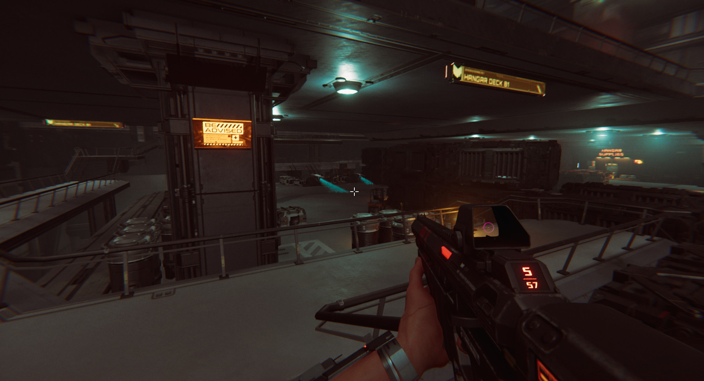

ROG CITADEL XV: Chapter II serves as a major narrative and gameplay expansion to the original ROG Citadel experience. It transitions from a passive showroom into a more active FPS campaign, introducing deeper storytelling, aggressive AI, and expanded environmental interaction.
In my role as Game Director and Art Director, I was responsible for evolving the visual and mechanical language of the series. I defined the new combat scenarios, directed the cinematics, and ensured the expanded environments maintained the high-fidelity sci-fi aesthetic established in Chapter I while introducing new visual themes.

For Chapter II, we wanted to push the scale. The environments transitioned from intimate showroom spaces into sprawling, complex industrial zones. We utilized advanced Unity shaders and PBR workflows to achieve a level of detail that complemented the high-end ROG hardware being showcased.
Role: Game Director, Art Director
Type: Game / FPS Campaign
Year: 2022
Client: ASUS ROG
Tools & Tech: Unity Engine, Adobe Creative Suite, Autodesk Maya, Substance Painter
{kind=link}